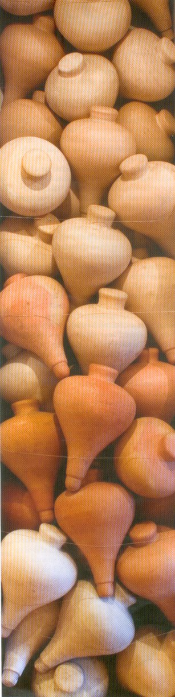

El trompo y el universo
Por WILLIAM OSPINA
Hay un hermoso verso de Leopoldo Lugones que parece aproximarnos al secreto del arte German Botero. Hablando de las cosas del mundo, el poeta de pronto dice: "Y la luna servía para mirarla mucho".
|  |
Esta civilización nuestra, tan laboriosa, tan utilitaria, ya sólo valora las cosas si tienen algún uso preciso, una función productiva, y suele mirar con desdén la actitud contemplativa de culturas a las que la naturaleza les gusta simplemente por lo que es, aunque su sentido y su utilidad resulten misteriosos o inaccesibles. Mientras otras edades se conformaban con mirar la luna, nuestro tiempo quiere saber para qué sirve, qué utilidad obtendremos de ella, qué prodigiosa bodega de recursos aprovechables será esa esfera ociosa que gira en la noche y apenas nos arroja la luz afantasmada que roba del sol. El verso de Lugones se burla de ese utilitarismo, les concede a las cosas el valor primordial de alimentar nuestro asombro, declara que debería bastarnos su existencia, sin pedir de ellas nada más. ¿Qué mayor utilidad que estimular la imaginación, hacer que nos inclinemos ante ellas llenos de interrogantes? A Germán Botero le encantan las formas elementales, los círculos, los conos, los cubos, los alfabetos básicos de la geometría. Y le gustan los objetos y los mecanismos que se logran a partir de ellos: las ruedas, las columnas, las esferas, las máquinas. Ciencia y técnica exigen de las cosas utilidad y funcionalidad, el arte es capaz de adorar los mecanismos por su sola existencia, sin exigirles utilidad alguna. Germán Botero rinde homenaje a esas civilizaciones que no descubrieron la rueda para usarla sino para contemplarla; pues nadie va más lejos con la rueda como quien la contempla. Toma la idea del telar y la convierte en tejido para los ojos. Deja que las formas existan en estado puro, instrumentos que no han de ser usados, ni descifrados, pues sólo quieren ser advertidos, permanecer en el silencio cósmico, en un silencio que sobrevive a las lenguas, a los textos y a las memorias. |
También en esa búsqueda Germán Botero toma formas familiares, objetos sencillos de la infancia, canicas, trompos, peonzas, carretas manuales, los cambia de lugar, de diseño, de dimensiones, y los convierte en raros objetos de contemplación: símbolos magnificados de la infancia perdida, pero también objetos que trascienden su utilidad cotidiana y se exaltan en letras de un texto misterioso.
Hay un fin más alto en el fondo
de todo esto: la búsqueda de algo poderoso y sagrado. Es
allí donde más radicalmente Germán Botero
confronta nuestra manera de estar en el mundo: él le devuelve al
mundo físico, al mundo de los espacios y de los objetos, su
significación mágica: hasta el trompo elemental de la
infancia se transfigura en objeto fantástico, las formas de las
herramientas se elevan formando el perfil de ciudades imaginarias, y
todas las cosas son formas ceremoniales, dibujos cuya gran pureza los
llena de solemnidad.
El juego se ha vuelto serio, el recuerdo se cambia en nostalgia del
futuro, los ensambles de piedra inspirados en túmulos
indígenas se convierten en austeras reflexiones sobre la
dignidad de la muerte, sobre la importancia cultural de los ritos
fúnebres. Y así, a través del ejercicio inspirado
del artista, no es que olvidemos el sentido de los objetos, sino que
descubrimos que todo objeto puede ser en sí mismo un sentido.
Después de acercarnos a las esculturas de Germán Botero
sabemos que hay en los objetos cotidianos algo más que su
utilidad, que las formas tienen dignidad en sí mismas, que todos
los objetos tienen también un sentido ritual, un sentido
místico, pues todos son símbolos y espejos ese otro
objeto desmesurado o infinito, el universo, que tampoco nos ha revelado
para qué fue hecho, de qué milagrosa y eterna tarea es el
túmulo, el trompo, el telar o la rueda.